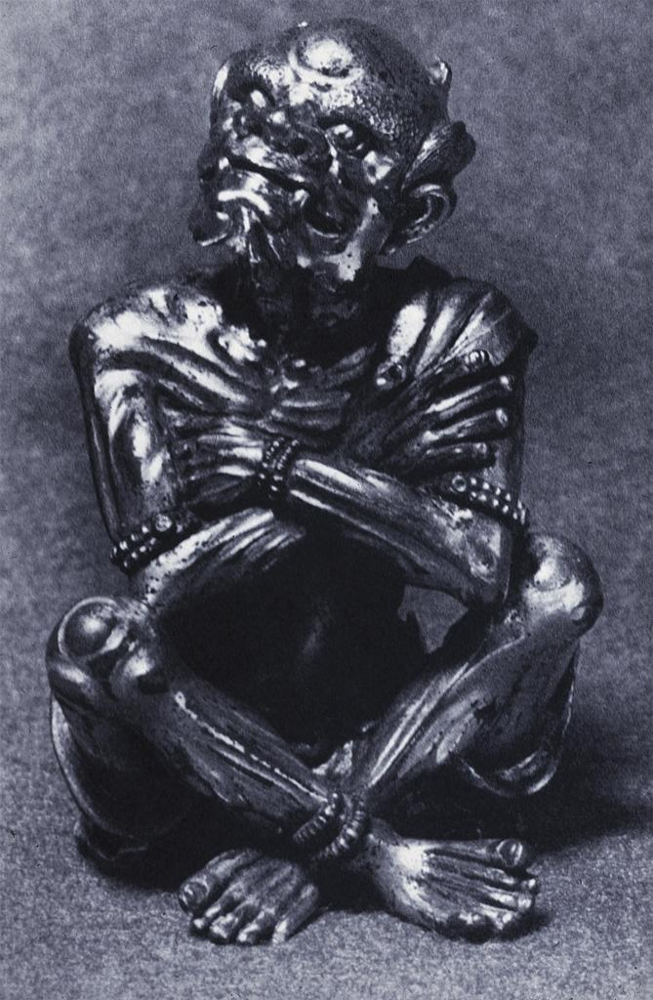

|  6th C. Buddhist Demon. http://library.artstor.org/asset/ARTSTOR_103_41822000816015. | Quick Facts
Location: China Measurements: 8.2 cm University of California, San Deigo |
This figurine depicts a Buddhist Demon. His body is hunched over and is appears to be sitting on the ground. His arms are crossed, wrapped around himself, and his legs are crossed at his ankles. On his limbs, he is also wearing bead bracelets. He appears extremely skinny, shown by his thin body and limbs. This Demon’s head is notably the creepiest aspect of the sculpture. With his head turned the demon has two teeth sticking out from his lower jaw. With a menacing smile, he definitely looks devilish. On his head, there are two stout horns, and his beady eyes look outwards. The detail of the expression (and the sculpture as a whole) is extremely realistic and it is particularly creepy. Luckily, the figure only stands 8.2 cm tall. The small size of the Buddhist demon indicates its production did not require a large amount of resources. Moreover, its small size makes it more likely to have been belonged to people of more common backgrounds, such as monks or lay practitioners. The grotesque face on the figurine suggests that its purpose was meant to inspire fear, perhaps to ward off malevolent forces. This then illustrates that the Buddhism that was practiced during the period contained an apotropaic aspect. |
|---|